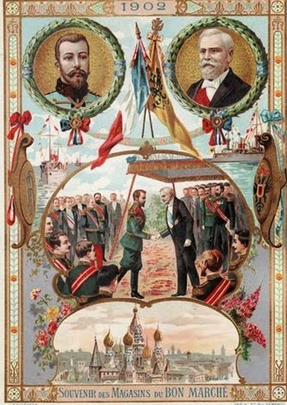

Depuis plusieurs années, à entendre les discours de certaines personnalités du monde politique et médiatique, la Russie semble être une nouvelle ennemie, pour la France, pour l'Union européenne, et pour les États-Unis. Le conflit en Crimée tout comme la guerre en Syrie leur servent d'exemples et d'arguments pour leurs idées. Bernard-Henri Lévy expliquait en 2014, peu après le début de la crise ukrainienne, que la « Russie poutinisée » était notre ennemie, et ceux qui osaient dialoguer avec elle étaient considérés comme des « collabos de la Novia Russia » Le pays n'est pourtant ni la Corée du Nord ni l’Érythrée.
Sur les sujets ukrainiens et syriens, en quoi la Russie pourrait être une ennemie ? Si le terme désigne celui qui n'est pas notre ami, alors effectivement nous avons un différend concernant la Crimée. Mais cela est moins vrai au sujet de la Syrie, l'objectif principal étant le même, celui de vaincre Daesh et de stabiliser le Moyen-Orient.
Le sujet Assad n'est pour l'heure que mineur. En revanche, si le terme d'ennemi est utilisé dans une acception plus large, à savoir des pays qui combattent dans des camps opposés en temps de guerre, ce serait faux d'affirmer cela. Car nous ne sommes pas en guerre contre la Russie. En Ukraine, nous soutenons politiquement, et non militairement, le pays qui seul pourrait peut-être se dire être en lice contre Moscou. Et encore… en lice contre qui ? Non contre la Russie mais contre des groupes paramilitaires. Enfin, si nous désignons l'ennemi comme quelqu'un qui cherche à nous nuire, ce n'est pas l'objectif du Kremlin qui a trop à perdre. Ce qu'il s'est passé en Crimée et dans l'est de l'Ukraine n'est pas pour nuire à l'Union européenne. Si tel était le cas, le Kremlin dispose d'autres moyens que celui de soutenir des indépendantistes.
La Russie n'est pas l'incarnation du mal. S'il est vrai qu'elle n'est pas un modèle exemplaire de démocratie, quelle grande nation peut affirmer l'être ? La France est déjà à sa quatrième dérogation à la Convention européenne des droits de l'homme et des libertés fondamentales. Si certes cela est autorisé par le traité, la France a une interprétation bien large de ce droit de réserve. La prison de Guantánamo est un autre exemple de démocratie bafouée. Quand l'intérêt supérieur de l’État est menacé, l'atteinte aux libertés paraît être légitime. Mais cette légitimité ne semble valable que pour les démocraties libérales.
Des divergences ne sont pas suffisantes pour déclarer quelqu'un d'ennemi. Nous en avons avec Israël, ce n'est pas notre ennemi. Nous en avons avec la Chine, ce n'est pas notre ennemie. Nous en avions avec Gbagbo, la Côte d'Ivoire n'était pas notre ennemie...
Par ailleurs, aucun homme politique français ne considère la Russie comme une ennemie, même potentielle. Les accords de Minsk, peu ou prou respectés, sont un exemple de recherche pacifiste à une crise.
Du point de vue russe, il en est de même. Selon un sondage de juin 2016 réalisé par le centre analytique Youri Levada, les Russes ne voient pas la France comme une ennemie de leur nation, ce qui n'est pas le cas des États baltes, au premier chef duquel la Lettonie. La société russe ressent surtout une hostilité vis-à-vis des États-Unis, l'Ukraine n'arrivant qu'en seconde position. Cette société est le reflet du système politico-médiatique de son pays.
Pour comprendre les sujets de ces dernières années, sur la Crimée et la Syrie, il convient de rappeler brièvement l'histoire, celle-ci étant trop souvent délaissée à des fins idéologiques ou d'intérêts étatiques.
UN PEU D'HISTOIRE
La Crimée
Sans remonter à l'Antiquité ou au Haut Moyen-Age, la Crimée, d'abord conquise par des Tatars et des Mongols, fait ensuite partie du monde byzantin, puis ottoman, et enfin russe à partir de 1792. Depuis cette date, la Crimée restera pour un temps russe puis soviétique, devenant un oblast à part entière. Par comparaison, la Crimée devient russe moins de 30 ans après que la Lorraine et la Corse ne deviennent françaises, et plus de 60 ans avant le rattachement de la Savoie et du comté de Nice à la France.
En 1954, Nikita Khrouchtchev, ukrainien d'origine et à l'époque Premier secrétaire du Comité central du Parti communiste de l'Union soviétique, offre l'oblast de Crimée à l'Ukraine à l'occasion du 300ème anniversaire de la réunification des deux pays. Pour comprendre cela, il est nécessaire de rappeler qu'à partir du XIVème siècle, et jusqu'au XVIème siècle, tout le nord-ouest de l'Ukraine se retrouve sous le joug de la Pologne et de la Lituanie – ce qu'on a appelé la République des Deux Nations – et qu'il n'est pas question pour une majorité de la population de se subordonner à cette autorité. C'est ainsi qu'apparaîtront les Cosaques, paysans orthodoxes refusant l'assimilation à des polonais catholiques.
Le soulèvement, avec l'aide des Tatars et des Russes, finit par aboutir à la naissance d'un État cosaque, l'Ukraine (qui signifie « province », « région »). Plus tard, le traité de Perejaslav en 1654 (du nom d'une ville proche de Kiev), entre les Cosaques et la Russie, place la Rus de Kiev sous l'autorité de Moscou. Cela nous ramène 300 ans avant 1954.
Ce clivage entre un nord-ouest d'influence lituano-polonaise, occidentale, et un sud-est conquis par les Tatars, les Ottomans et les Russes, se retrouve dans la structure politique actuelle du pays : une partie pro-européenne, méfiante vis-à-vis des Russes, et une autre partie, pro-russe, méfiante vis-à-vis des occidentaux.
A la chute de l'URSS, la Crimée se proclame République autonome puis République de Crimée. Comprenant une forte population russophone, elle proclame son indépendance en 1992 mais accepte d'être rattachée à l'Ukraine en échange d'une large autonomie. Sébastopol, fondée par Catherine II pour y implanter un port, obtient un statut spécial au sein de l’État ukrainien. S'ensuit au fil du temps une série de manifestations pro-russes et pro-ukrainiennes. Le statut de Sébastopol et le retrait de la flotte russe de la région sont un des enjeux. La Crimée réaffirme son autonomie mais de plus en plus contestée par Kiev. La Russie, ne reconnaissant officiellement la République autonome de Crimée qu'en 1997, en profite alors pour récupérer sa sphère d'influence dans la région.
Les désaccords entre pro-européens et pro-russes s'accentuent toujours.Lorsque le parlement ukrainien refuse en 2013 l'accord d'association avec l'Union Européenne, la population ouest-ukrainienne, ainsi qu'une partie des Kiévois se soulèvent : ce sont les manifestations d'Euromaïdan qui débouchent sur la fuite du président Viktor Ianoukovytch. Véritable révolution pour les pro-européens, elle est qualifiée de coup d’État par les pro-russes. Ces événements attisent la poussée indépendantiste en Crimée, région composée majoritairement de russophones. Ne reconnaissant pas les nouvelles autorités de Kiev – le gouvernement de transition avait interdit l'usage de la langue russe - le parlement de Crimée opte finalement, par référendum, pour son rattachement à la Russie. Un accord est signé entre Moscou et Simféropol. Ce rattachement n'est pas reconnu par l'ensemble de la communauté internationale, excepté par le Belarus, l'Arménie et le Kirghizistan.
Le référendum en Crimée est fortement à rapprocher du rattachement de Mayotte à la France en 1975, qui lui aussi n'est toujours pas reconnu par la communauté internationale.
La Syrie
Les relations russo-syriennes sont assez récentes. D'abord proche des Américains pendant la guerre froide, la Syrie se rapproche de Moscou lorsque le Kremlin, en 2005, baisse la dette syrienne vis-à-vis de la Russie. Le régime d'Hafez El-Assad, père de Bachar El-Assad, s'est effectivement endetté en bénéficiant de livraisons d'armes et de conseillers militaires en provenance de Russie. Depuis les années 2000, la coopération militaro-technique, commencée au début des années 1980 et plus ou moins délaissée sous Mikhaïl Gorbatchev, se renforce. Cela a contribué au soutien russe de la Syrie et permis à Moscou de garder sa base navale permanente à Tartous, second port de Syrie après Lattaquié. Considérant la Méditerranée comme une mer hautement stratégique, les Russes ne peuvent se défaire de ce port d'où leur soutien à un régime considéré comme ami.
Le porte-avions russe « Kuznetsov » dans le port de Tartous (Syrie)
LA RUSSIE, UN PARTENAIRE NECESSAIRE
Les liens entre la France et la Russie ont souvent été amicaux, qu'il s'agisse de l'époque de Pierre le Grand, de Catherine II, ou de la Triple Entente. Après la défaite française de 1870, la France se rapproche de la Russie pour s'allier dès 1892. Les divers emprunts russes à la France permettent à Moscou de développer ses industries, comme l'industrie ferroviaire avec le Transsibérien. Les exemples sont nombreux. Aujourd'hui, il faut continuer à maintenir ces liens. Cela est même nécessaire de rester tourné vers Moscou, plus qu’outre-Atlantique, au vu des enjeux géopolitiques actuels.
Les différends sur la Crimée et la Syrie devraient pour l'heure être mis entre parenthèses. Si certaines actions ou méthodes peuvent déplaire, il ne s'agit pas de faire de l'émotion une politique.
La Russie se pose en défenseur du droit des peuples à disposer d'eux-mêmes, principe de droit international. Elle se veut défenseur des minorités, qui était déjà un objectif des vainqueurs de la Première guerre mondiale. Devons-nous être offusqués pour cela ? L'Ukraine ne trouve rien de mieux, pour s'affirmer, que d'abroger la loi linguistique de 2012 autorisant le statut de langues régionales à celles parlées par au moins 10 % de la population d'une région. Ainsi, Kiev interdit aux russophones de faire des démarches administratives dans leur langue, de suivre les enseignements dans leur langue, et interdit par la même occasion aux assemblées régionales et locales de délibérer dans leur langue. Comment réagiraient les Français si les gouvernements belge, suisse ou luxembourgeois interdisaient sa langue à nombre de francophones dans ces pays ?
Il est donc compréhensible que les russophones appellent à l'aide la Russie. Et il est faux de penser que Moscou souhaite recréer son empire d'antan, en intimidant les pays baltes ou la Pologne qui sont en réalité peu menacés puisque membres de l'OTAN et de diverses alliances de défense. Il ne faut pas croire aussi ceux qui prétendent que les frontières de l'Europe doivent être immuables alors qu'ils ne s'indignent nullement lorsqu'il s'agit de redécouper les frontières avec la naissance de la République du Kosovo. Personne ne s'est offusqué de la séparation de la Tchécoslovaquie en 1993, ni-même du rattachement de Mayotte à la France en 1975, cas quasi-similaire à celui de la Crimée. Et que dire du Soudan du Sud en 2011 ? Des territoires non-incorporés des États-Unis ? Les populations de Puerto Rico, des Mariannes du Nord, de Guam possèdent toutes la nationalité américaine mais n'en ont pas la citoyenneté. Ils ont également un représentant au Congrès mais sans droit de vote. Cela émeut-il le monde ? La justice et l'égalité doivent-elles être à deux vitesses ?
Un Britannique, Richard Shirreff, ancien commandant en chef adjoint de l'OTAN pour l'Europe en 2014, a écrit un livre, « 2017 : guerre contre la Russie » où il relate la plausibilité d'une guerre nucléaire avec la Russie. Il y explique qu'il faut juger Poutine non sur ses paroles mais sur ses actes. Et il reprend les sujets de l'annexion de la Crimée, de l'Ukraine et de la Géorgie. Selon lui, une attaque contre les États baltes est possible. Doué sans doute pour les romans de science-fiction, il est plus à rapprocher de Tom Clancy que de Nostradamus. Mais il oublie qu'il n'y a pas eu d'annexion en Crimée - ce fut un referendum d'autodétermination – que l'Ukraine a méprisée ses minorités, et que c'est la Géorgie qui a attaqué les troupes russes positionnées dans la région séparatiste d'Ossétie du Sud, fortes d'un mandat international. Que le rattachement de la Crimée à la Russie ne soit pas reconnu par la communauté internationale est une chose, parler d'annexion est mentir ou méconnaître les faits.
L'opposition entre la Russie et l'Union européenne est ridicule tant il y a des combats bien plus importants à mener. Le terrorisme fondamentaliste en est un exemple. Celui-ci essaie de s'organiser en un État, allant de l'Afrique du Nord au Caucase, en passant par le Mali, le Nigeria la Libye, la Somalie, la Syrie, l'Irak, l'Afghanistan et le Pakistan. L'UE comme la Russie sont touchées par le terrorisme. L'autoproclamé Émirat du Caucase a prêté allégeance à Daesh parce que la lutte anti-terroriste russe est très efficace et qu'il n'avait pas d'autre moyen que de rejoindre une organisation bien structurée pour survivre. La France et l'UE devrait s'appuyer sur les compétences russes en matière de lutte contre le terrorisme, et ne pas utiliser des méthodes de contre-espionnage là où il faut pratiquer le contre-terrorisme.
Il est nécessaire de se dégager de l'idée selon laquelle Poutine vaudrait n'importe quel dictateur. Personne n'a semblé être inquiet quand furent appelés, en 2014, au gouvernement provisoire ukrainien, différents membres du parti d'extrême-droite Svoboda dont Andry Parouby à la tête du Conseil national de sécurité et Oleh Makhnistsky comme procureur général. Svoboda ne cache pas son idéologie homophobe, polonophobe, antisémite… Mais il a aussi la bonne idée d'être russophobe. Cela l'excuse-t-il donc ?
Il est surtout urgent de parler avec la Russie qui est bien plus une alliée potentielle qu'une ennemie imaginaire, heureuse invention pour justifier l'existence d'une OTAN qui a du mal à se positionner dans le monde contemporain. En outre, ce serait sans doute la seule façon de pousser la Russie vers plus de démocratie. Il est également urgent que la France réétudie sa stratégie de défense. Elle possède de nombreux atouts : c'est un des rares pays à projeter ses forces opérationnelles aux quatre coins du monde, à entrer dans les théâtres d'opération très rapidement, à maîtriser sa dissuasion nucléaire, ses forces spéciales... Elle est également le seul pays d'Europe à posséder un porte-avions nucléaire. La France a donc des moyens de défense non négligeables, mais ceux-ci ne sont pas adaptés à la nature actuelle des menaces. L'opération Serval au Mali a révélé par exemple les failles de ses équipements et de la logistique.
Il faut donc repenser nos menaces, nos alliés, et notre vision du monde. Nos élus devraient y réfléchir et se projeter dans l'avenir.
Partager cette page